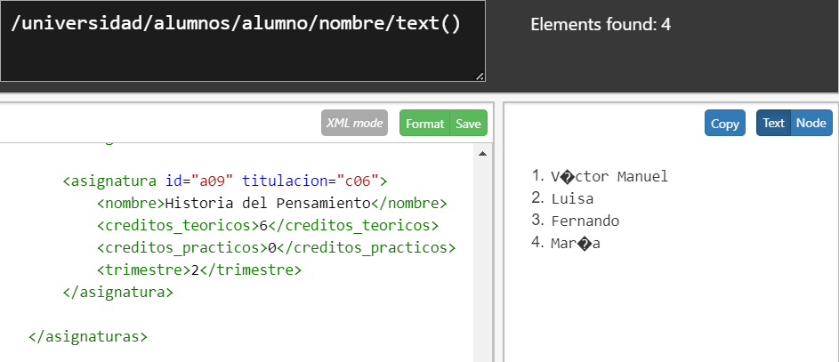
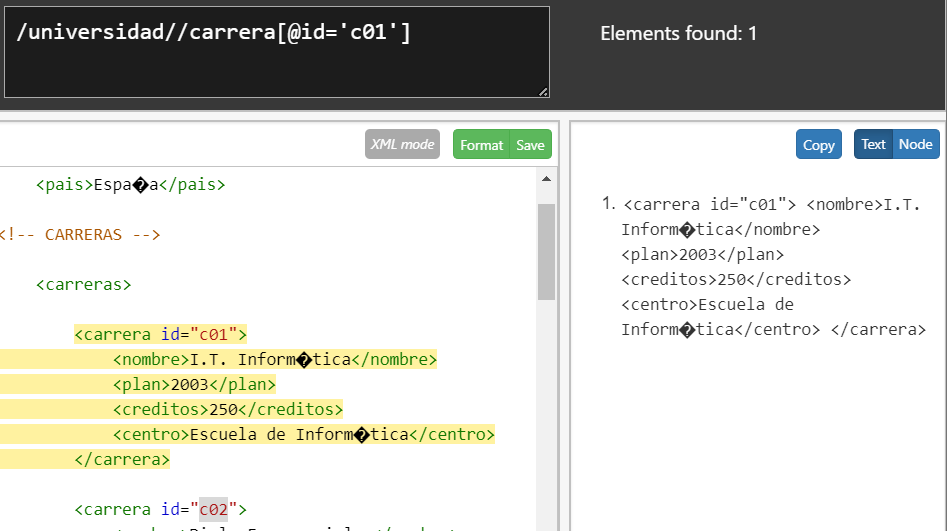

Dado los siguientes datos XPath online real-time tester, evaluator and generator for
XML & HTML (xpather.com) se pide realizar las siguientes consultas en:
- Nombre de la Universidad
/universidad/nombre/text()Resultado - Nombres de las Carreras
/universidad/carreras/carrera/nombreResultado - Años de plan de estudios de las carreras
/universidad/carreras/carrera/plan/text()Resultado - Nombres de todos los alumnos
/universidad/alumnos/alumno/nombre/text()Resultado  - Identificadores de todas las carreras
/universidad//carrera[@id]Resultado - Datos de la carrera cuyo id es c01
/universidad//carrera[@id='c01']Resultado  - Centro en que se estudia de la carrera cuyo id es c02:
/universidad//carrera[@id='c02']/centroResultado - Nombre de las carreras que tengan subdirector:
//carreras/carrera[subdirector]/nombreResultado - Nombre de los alumnos que estén haciendo proyecto:
//alumno/estudios[proyecto]/../nombre/text()Resultado - Códigos de las carreras en las que hay algún alumno matriculado:
//alumno/estudios/carrera[@codigo]/../../nombreResultado - Apellidos y Nombre de los alumnos con beca:
//alumno[@beca]/(apellido1|apellido2|nombre)Resultado - Nombre de las asignaturas de la titulación c04:
//asignaturas/asignatura[@titulacion="c04"]/nombreResultado - Nombre de las asignaturas de segundo trimestre:
//asignatura[trimestre=2]/nombreResultado - Nombre de las asignaturas que no tienen 4 créditos teóricos:
//asignatura[creditos_teoricos!=4]/nombreResultado
- Código de la carrera que estudia el último alumno:
Resultado

- Código de las asignaturas que estudian mujeres:
//alumno[sexo='Mujer']/estudios//asignatura/@codigoResultado - Nombre de los alumnos que matriculados en la asignatura a02:
//alumno[estudios//asignatura[@codigo='a02']]/nombreResultado